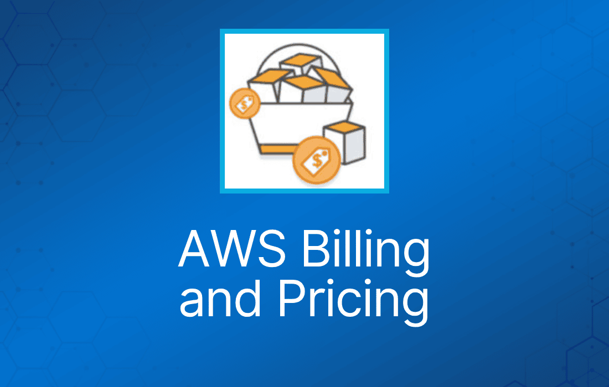
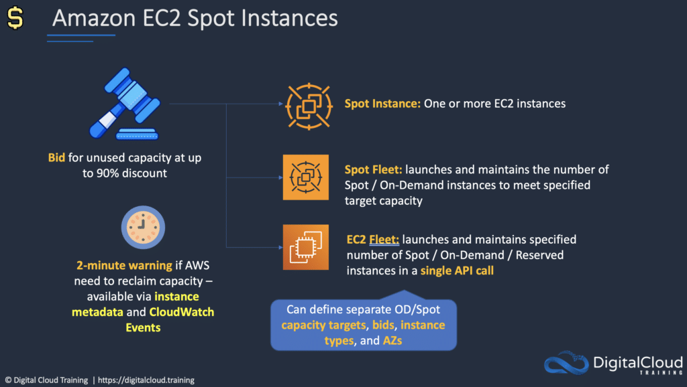
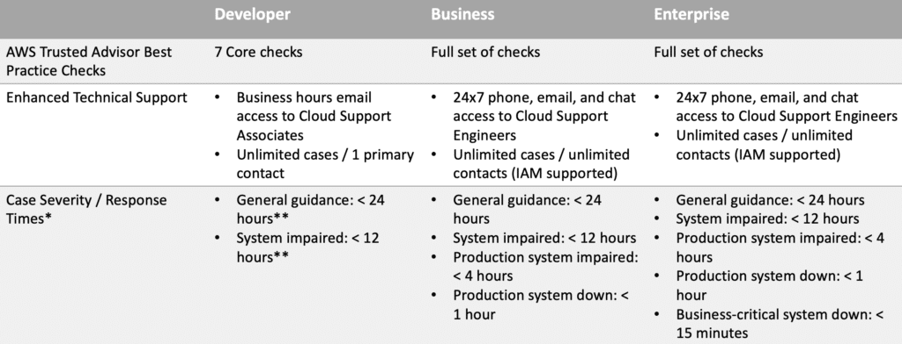
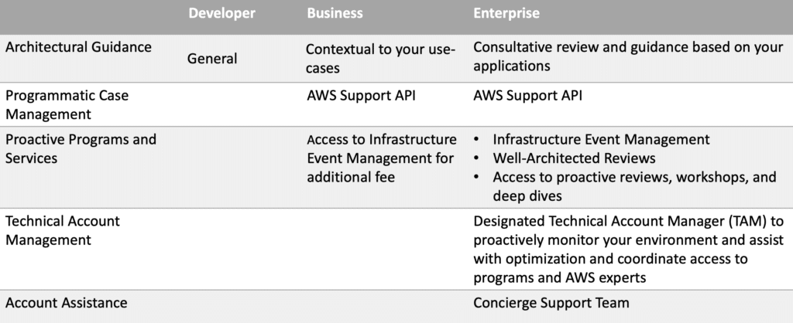

AWS 账单与定价是 AWS Certified Cloud Practitioner 考试的重点科目之一。
AWS 采用按使用量付费（pay as you go）模式，你只为自己实际使用的部分、在使用期间付费。
关闭资源后就不再为其付费（已消耗的存储可能仍会计费）。
没有预付费，停止使用某项服务后即停止付费。
除了 EC2 预留实例外，你不会被长期合同锁定，可以随时终止。
提供用量折扣，服务用得越多，单价越便宜。
没有终止费用。
AWS 成本的三个基本驱动因素是：计算（compute）、存储（storage）和出站数据传输（outbound data transfer）。
在大多数情况下，入站数据传输以及同一 region 内 AWS 服务之间的数据传输不收费（有一些例外）。
出站数据传输会跨服务汇总，然后按出站数据传输费率计费。
Free tier 允许你免费运行某些资源。
Free tier 包含 12 个月后到期的优惠和永不过期的优惠。
定价策略包括：
- 按使用量付费。
- 预留资源则更便宜。
- 用量越大，单价越低。
- 随着 AWS 的发展，价格越来越低。
- 定制 pricing（仅限企业客户）。
免费服务包括：
- Amazon VPC。
- Elastic Beanstalk（但创建的资源不免费）。
- CloudFormation（但创建的资源不免费）。
- Identity Access Management（IAM）。
- Auto Scaling（但创建的资源不免费）。
- OpsWorks。
- Consolidated Billing。
基本收费项包括：
- 计算。
- 存储。
- 数据传出。
Amazon EC2 定价
EC2 定价基于：
- 服务器运行时长（按小时计）。
- 实例配置。
- 实例类型。
- 实例数量。
- 负载均衡。
- 详细监控（detailed monitoring）。
- Auto Scaling（创建的资源）。
- Elastic IP 地址（已分配但未使用会收费）。
- 操作系统和软件包。
AWS 服务有多种定价模式，包括：
On Demand（按需）：
- 无需长期承诺或预付费，按计算或数据库容量付费。
- 按小时或按秒为计算容量付费（仅 Linux，适用于 On-Demand、Reserved 和 Spot 实例）。
- 适合希望低成本、灵活、不想预付费或做长期承诺的用户。
- 适合短期、突增或不可预测且不能中断的工作负载。
Dedicated Hosts（专用主机）：
- Dedicated host 是专门供单个客户使用的 EC2 服务器。
- 运行在你的 VPC 中。
- 适合想利用现有绑定服务器的软件许可证的场景，如 Windows Server、SQL Server 和 SUSE Linux Enterprise Server。
- 也适合满足合规要求。
Dedicated Instances（专用实例）：
- Dedicated Instance 是在 VPC 中运行在专供单个客户使用的硬件上的 Amazon EC2 实例。
- Dedicated instance 在宿主机硬件层面与其他 AWS 账户的实例物理隔离。
- Dedicated instance 可能与同一 AWS 账户中非 Dedicated 的其他实例共享硬件。
Spot Instances（竞价实例）：
- 以折扣价购买闲置计算容量，无需预付承诺。
- 相比 On-Demand 价格最高可省 90%。
- 适合开始和结束时间灵活的应用、只有在极低计算价格下才可行的应用，以及急需大量额外容量的用户。
- 在旧模式中，Spot 实例会因为更高的竞争出价而被终止；新模式下不会这样，但当 EC2 需要收回容量时，实例仍可能被终止（提前 2 分钟警告）——注意：考试内容可能尚未更新以反映这一变化。

Savings Plans：
- 承诺使用一致的用量（EC2 + Fargate + Lambda）；按美元/小时付费；1 年或 3 年承诺期。
Reservations（预留）：
- 通过预先为容量付费，预留实例可提供大幅折扣，相比 On-Demand 定价最高可省 75%。
- 应用到特定可用区时，提供容量预留。
- 适合用量可预测、需要预留容量的应用，以及能承诺 1 年或 3 年期限的客户。
预留适用于多种服务，包括：
- Amazon EC2 Reserved Instances。
- Amazon DynamoDB Reserved Capacity。
- Amazon ElastiCache Reserved Nodes。
- Amazon RDS Reserved Instances。
- Amazon RedShift Reserved Instances。
预留付款选项包括 No Upfront（无预付）、Partial Upfront（部分预付）和 All Upfront（全部预付）。
预留期限为 1 年或 3 年。
Amazon Simple Storage Service（S3）定价
存储定价由以下因素决定：
- 存储类别 —— 例如 Standard 或 IA。
- 存储量 —— 按 GB 计算存储在 bucket 中的数据量。
- 请求数量 —— 请求的数量和类型，如 GET、PUT、POST、LIST、COPY。
- 生命周期转换请求 —— 在存储类别之间移动数据。
- 数据传输 —— 传出 S3 region 的数据会收费。
Amazon Glacier 定价
- 成本极低，只为所需部分付费，无承诺或预付费用。
- 请求以及传出 Glacier 的数据会收费。
- “Amazon Glacier Select” 定价允许直接对存储在 Glacier 上的数据运行查询，而无需取回归档。按扫描的数据量、返回的数据量和发起的请求数计费。
AWS Snowball 定价
按每个数据传输任务收取服务费，另加设备运输费用。
每个任务可免费在现场使用 Snowball 设备 10 天。
传入 AWS 的数据免费，传出收费（按 region 定价）。
Amazon Relational Database Service（RDS）定价
RDS 定价由以下因素决定：
- 服务器运行时长 —— 数据库实例运行的时长。
- 数据库特性 —— 如数据库引擎、规格和内存级别。
- 数据库购买类型 —— 如 On-Demand、Reserved。
- 数据库实例数量。
- 预配置存储 —— 包含不超过数据库大小 100% 的备份。数据库终止后，备份存储按 GB/月收费。
- 额外存储 —— 超出预配置存储的部分按 GB/月收费。
- 请求 —— 数据库的输入输出请求数量。
- 部署类型 —— 单 AZ 或多 AZ。
- 数据传输 —— 入站免费，出站数据传输按阶梯计费。
- 预留实例 —— RDS RI 可按 No Upfront、Partial Upfront 或 All Upfront 购买。适用于 Aurora、MySQL、MariaDB、Oracle 和 SQL Server。
Amazon CloudFront 定价
CloudFront 定价由以下因素决定：
- 流量分发 —— 数据传输和请求定价，因 region 而异，基于提供内容的边缘站点（edge location）。
- 请求 —— 请求的数量和类型（HTTP 或 HTTPS），以及发出请求的地理区域。
- 数据传出 —— 从 CloudFront 边缘站点传出的数据量。
- 还有其他收费项，如失效请求（invalidation request）、字段级加密请求和自定义 SSL 证书。
AWS Lambda 定价
只为你使用的部分付费，根据函数的请求次数和代码执行时长计费。
价格取决于为函数分配的内存量。
Amazon Elastic Block Store（EBS）定价
定价基于三个因素：
- 卷（Volume）—— 所有 EBS 卷类型的卷存储按每月预配置的 GB 数计费。
- 快照（Snapshot）—— 基于快照在 S3 中占用的空间计费。跨区域复制快照按复制的数据量计费。
- 数据传输 —— 入站免费，出站按阶梯计费。
Amazon DynamoDB 定价
按以下项目计费：
- 预配置吞吐（写）。
- 预配置吞吐（读）。
- 索引数据存储。
- 数据传输 —— 同一 region 内 DynamoDB 与其他 AWS 服务之间的数据传输不收费；跨 region 传输双向收费。
- Global tables —— 按表的每个副本关联的资源计费（replicated write capacity units，即 rWCU）。
- Reserved Capacity —— 可选方案，一次性预付费，并承诺在期限内以特定小时费率支付最低用量。超出部分的吞吐按标准费率计费。
On-demand capacity mode（按需容量模式）：
- 按读写计费
- 无需指定所需容量
- 适合不可预测的工作负载
Provisioned capacity mode（预配置容量模式）：
- 指定每秒读写次数
- 可以使用 Auto Scaling
- 适合可预测的工作负载
- 流量稳定或渐变
AWS Support Plans
AWS 提供四种支持计划：
- Basic —— 仅账单和账户支持（仅能访问论坛）。
- Developer —— 工作时间邮件支持。
- Business —— 24×7 邮件、聊天和电话支持。
- Enterprise —— 24×7 邮件、聊天和电话支持。
Enterprise 支持附带 Technical Account Manager（TAM）。
Developer 计划允许一个人不限量开 case。
Business 和 Enterprise 计划允许不限数量的联系人不限量开 case。


Resource Groups 与标签
标签（tag）是可以附加到 AWS 资源的键值对。
标签包含元数据（关于数据的数据）。
标签有时可以被继承——例如由 Auto Scaling、CloudFormation 或 Elastic Beanstalk 创建的资源。
Resource group 让你可以方便地使用资源上分配的标签对资源进行分组。你可以将共享一个或多个标签的资源归为一组。
Resource group 包含通用信息，例如：
- Region。
- 名称。
- Health Check。
以及特定信息，例如：
- 公有和私有 IP 地址（EC2）。
- 端口配置（ELB）。
- 数据库引擎（RDS）。
AWS Organizations 与 Consolidated Billing
AWS Organizations 允许你将多个 AWS 账户整合到一个由你创建并集中管理的组织中。
提供两种功能集：
- Consolidated Billing。
- 全部功能。
包含 root 账户和组织单元（OU）。
策略应用于 root 账户或 OU。
Consolidated billing 包含：
- Paying Account —— 独立存在，无法访问其他账户的资源。
- Linked Accounts —— 所有 linked account 都是独立的。
Consolidated billing 有以下好处：
- 一张账单 —— 多个账户合并为一张账单。
- 易于跟踪 —— 可以跟踪多个账户的费用，并下载合并的成本和用量数据。
- 合并用量 —— 可以合并组织中所有账户的用量，共享用量折扣和 Reserved Instance 折扣。相比独立的单个账户，这可以降低项目、部门或公司的费用。
- 无额外费用 —— Consolidated billing 免费提供。
linked account 上限为 20 个（默认）。
多个 AWS 账户合并为一张账单。
易于跟踪费用和分摊成本。
可以对资源应用用量折扣。
在 Paying account 上启用的账单告警包含所有 Linked account 的数据（也可以按 Linked account 单独创建）。
Consolidated billing 让你可以在所有账户上获得用量折扣。
未使用的 EC2 预留实例（RI）会在整个组内应用。
CloudTrail 按账户、按 region 启用，但可以聚合到 Paying account 的单个 bucket 中。
最佳实践：
- 始终在 root 账户上启用多因素认证（MFA）。
- 始终为 root 账户使用强复杂密码。
- Paying account 只应用于账单用途。不要在 Paying account 中部署资源。
AWS Quick Starts
Quick Start 由 AWS 架构师和合作伙伴构建，基于 AWS 在安全和 高可用方面的最佳实践，帮助你在 AWS 上部署热门解决方案。
这些参考部署会在 AWS Cloud 上自动实现关键技术，通常只需点击一次、不到一小时即可完成。
基于 CloudFormation。
AWS 成本计算器与工具
- AWS Cost Explorer —— 让你可视化随时间变化的用量模式，并识别底层成本驱动因素。
- AWS Pricing Calculator —— 根据你的 AWS 使用场景创建成本估算。
AWS Cost Explorer
AWS Cost Explorer 是一个免费工具，可以查看成本的图表。
你可以查看过去 13 个月的成本数据，并预测未来三个月可能的花费。
Cost Explorer 可用于发现 AWS 资源支出随时间变化的模式，并找出成本问题所在。
Cost Explorer 可以帮助你识别服务用量统计信息，例如：
- 你最常使用哪些服务。
- 查看哪个 AZ 流量最大的指标。
- 哪个 linked account 使用最多。
AWS Pricing Calculator
AWS Pricing Calculator 是一项基于 Web 的服务，可用于根据你的 AWS 使用场景创建成本估算。
AWS Pricing Calculator 既适合从未使用过 AWS 的人，也适合想要重组或扩展用量的用户。
AWS Pricing Calculator 允许你根据使用场景探索 AWS 服务并创建成本估算。
AWS Cost & Usage Report
将 AWS 账单报告发布到 Amazon S3 bucket。
报告按以下维度细分成本：
- 小时、天、月、产品、产品资源、标签。
报告每天最多可更新三次。
使用 AWS CUR API 创建、检索和删除报告。
AWS Price List API
查询 AWS 服务的价格。
Price List Service API（又称 Query API）—— 以 JSON 查询。
AWS Price List API（又称 Bulk API）—— 以 HTML 查询。
价格变动时通过 Amazon SNS 告警。
AWS Budgets
用于跨多个维度（如服务或 Cost Category）跟踪成本、用量，以及 Reserved Instance 和 Savings Plans 的覆盖率与利用率。
当实际或预测的成本、用量超出预算上限，或 RI 和 Savings Plans 的覆盖率、利用率低于阈值时，通过事件驱动的告警通知进行提醒。
根据业务需求，创建年度、季度、月度甚至每日预算。